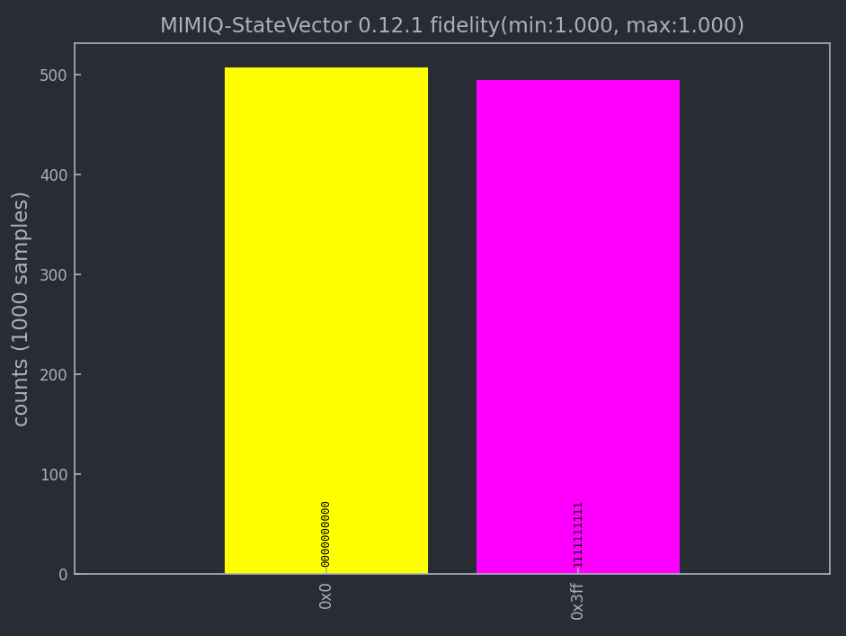

Tutorial#
In this guide, we will walk you through the fundamental procedures for simulating a quantum circuit using MIMIQ-CIRC product developed by QPerfect. Throughout the tutorial, we will furnish links to detailed documentation and examples that can provide a deeper understanding of each topic.
In order to use MIMIQ-CIRC Python version, you need to first install the mimiqcircuits Python module within your workspace by following this step:
from mimiqcircuits import *
Building a Quantum circuit#
The first step in executing quantum algorithm on MIMIQ-CIRC always consists in defining one implementation of the algorithm as a quantum circuit, a sequence of quantum operations (quantum gates, measurements, resets, etc…) that act on a set of qubits. In MIMIQ-CIRC we always start by defining an empty circuit:
circuit = Circuit()
circuit
empty circuit
In mimiq-circuits-python we do not need to specify the number of qubits of a circuit,
or a list of quantum registers to use. Qubits will be allocated up to the maximum used index
It’s important to note that in mimiq-circuits-python, qubit indices start from 0, following the standard Python indexing convention.
Therefore, qubit indices are allowed values between 0 and 2^63.
A circuit is made up of quantum operations. Gates, or unitary operations,
are the simplest and most common ones. Lists are provided by the documentation of
mimiq-circuits-python. Please check out in the Circuit class for more details about available operations.
To add operations to circuits in Python we will be using the push() function, which takes multiple arguments,
but usually: the circuit to add the operation to, the operation to be added, and as many target qubits as possible.
In this first simple example [mimiqcircuits.GateH], only needs one target:
circuit.push(GateH(),0)
1-qubit circuit with 1 instructions:
└── H @ q0
The text representation H @ q1 informs us that there is an instruction which applies the Hadamard gate to the qubit of index 0.
Multiple gates can be added at once through the same push syntax. In the following example we add 9 CX or control-X gates between the qubit 0 and all the qubits from 1 to 9.
circuit.push(GateCX(),0, range(1,10))
10-qubit circuit with 10 instructions:
├── H @ q0
├── CX @ q0, q1
├── CX @ q0, q2
├── CX @ q0, q3
├── CX @ q0, q4
├── CX @ q0, q5
├── CX @ q0, q6
├── CX @ q0, q7
├── CX @ q0, q8
└── CX @ q0, q9
This syntax is not dissimilar to the OpenQASM one, and can be seen as equivalent of:
for i in range(1,10):
circuit.push(GateCX(), 0, i)
The same is true for adding operations that act also on classical bits
circuit.push(Measure(),range(0,10), range(0,10))
10-qubit circuit with 20 instructions:
├── H @ q0
├── CX @ q0, q1
├── CX @ q0, q2
├── CX @ q0, q3
├── CX @ q0, q4
├── CX @ q0, q5
├── CX @ q0, q6
├── CX @ q0, q7
├── CX @ q0, q8
├── CX @ q0, q9
├── Measure @ q0, c0
├── Measure @ q1, c1
├── Measure @ q2, c2
├── Measure @ q3, c3
├── Measure @ q4, c4
├── Measure @ q5, c5
├── Measure @ q6, c6
├── Measure @ q7, c7
├── Measure @ q8, c8
└── Measure @ q9, c9
which is equivalent to:
for i in range(0,10):
circuit.push(Measure(), i, i)
The number of quantum bits and classical bits of a circuit is defined by the maximum index used, so in this case 10 for both.
circuit.num_bits(), circuit.num_qubits()
With these informations, it is already possible to build any quantum circuit.
However, for alternative advanced circuit building utilities see the documentation of mimiqcircuits-python in this page API References.
Remote execution on MIMIQ-CIRC#
In order to execute the implemented circuit on MIMIQ-CIRC three more steps are required:
Make a connection: opening a connection to the MIMIQ Remote Services,
Send a Circuit to be executed: send a circuit for execution,
Retrieve the results: retrieve the results of the execution.
Connecting to MIMIQ#
In most cases, connecting to MIMIQ can achieved by a single instruction:
conn = MimiqConnection()
conn.connect()
Now, you will be redirected to a local webpage, which will automatically open in your default browser. Here, you’ll be prompted to enter your authentication username and password. After providing your authentication details you will be able to send jobs.
Note
In order to complete this step you need an active subscription to MIMIQ-CIRC. To obtain one, please contact us or, if your organization already has a subscription, contact the organization account holder.
executing a Circuit on MIMIQ#
Once a connection is established an execution can be sent to the remote services.
job = conn.execute(circuit)
job
'657b1a76d263121c8649f715'
This will execute a simulation of the given circuit with default parameters. The default choice of algorithm is “auto”. Generally, there are three available options:
auto for the automatically selecting the best algorithm according to circuit size and complexity.
statevector for a highly optimized state vector engine.
mps for a large-scale Matrix Product States (MPS) method.
Please check out MimiqConnection class for more details.
Retrieving execution results#
Once the execution has terminated on MIMIQ, the results can be retrieved via the get_results() function,
which returns a QCSResults structure.
res = conn.get_results(job)
res
QCSResults:
├── simulator: MIMIQ-StateVector 0.12.1
├── amplitudes time: 1.18e-07s
├── apply time: 7.8685e-05s
├── total time: 0.01071431s
├── sample time: 0.000524353s
├── compression time: 1.7545e-05s
├── fidelity estimate (min,max): (1.000, 1.000)
├── average ≥2-qubit gate error (min,max): (0.000, 0.000)
├── 1 executions
├── 0 amplitudes
└── 1000 samples
Name and version of the simulator, samples, and timings can be retrieved from the aggregated results. For example, to make an histogram out of the retrieved samples, it suffices to execute
res.histogram()
{frozenbitarray('1111111111'): 494, frozenbitarray('0000000000'): 506}
And for plotting the results simply execute this command:
plothistogram(res)

Retrieving execsubmitted remote jobs#
There is also possibility to retrieve your submitted jobs parameters:
circuit, parameters = conn.get_inputs(job)
circuit
10-qubit circuit with 20 instructions:
├── H @ q0
├── CX @ q0, q1
├── CX @ q0, q2
├── CX @ q0, q3
├── CX @ q0, q4
├── CX @ q0, q5
├── CX @ q0, q6
├── CX @ q0, q7
├── CX @ q0, q8
├── CX @ q0, q9
├── Measure @ q0, c0
├── Measure @ q1, c1
├── Measure @ q2, c2
├── Measure @ q3, c3
├── Measure @ q4, c4
├── Measure @ q5, c5
├── Measure @ q6, c6
├── Measure @ q7, c7
├── Measure @ q8, c8
└── Measure @ q9, c9
parameters
{'executor': 'Circuits',
'timelimit': 300,
'files': [{'name': 'circuit.pb',
'hash': '6624a5fea70bc461cbb9138a9de5e0c58baffe7fac4884b6b0bfc068b36ec388'}],
'parameters': {'algorithm': 'auto',
'bitstrings': [],
'samples': 1000,
'seed': 122635094871933542,
'apilang: ': 'python',
'apiversion': '0.6.1',
'circuitsapiversion': '0.6.1',
'bondDimension': 256}}